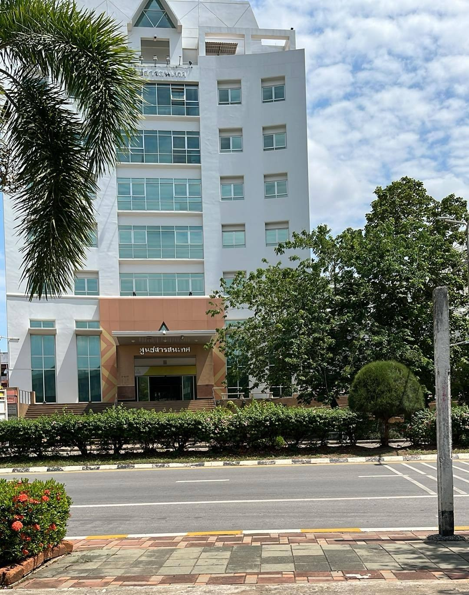
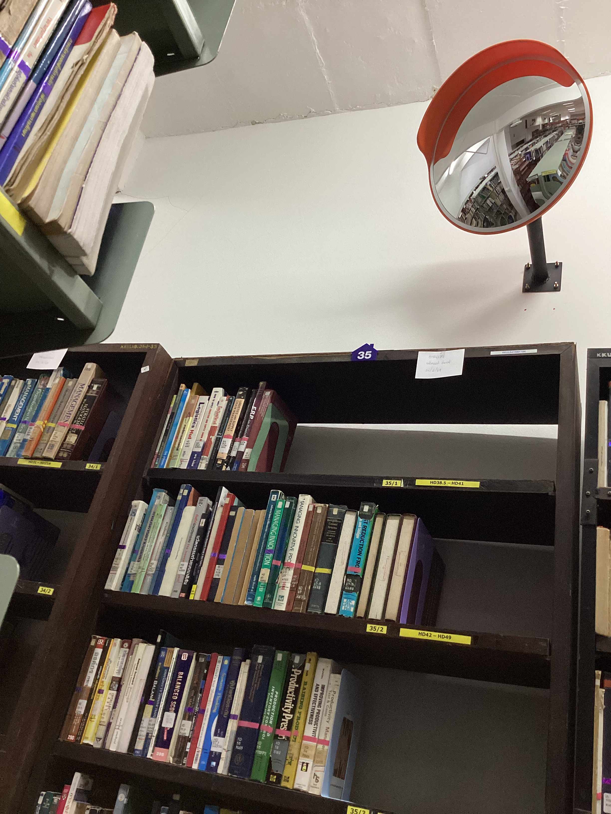
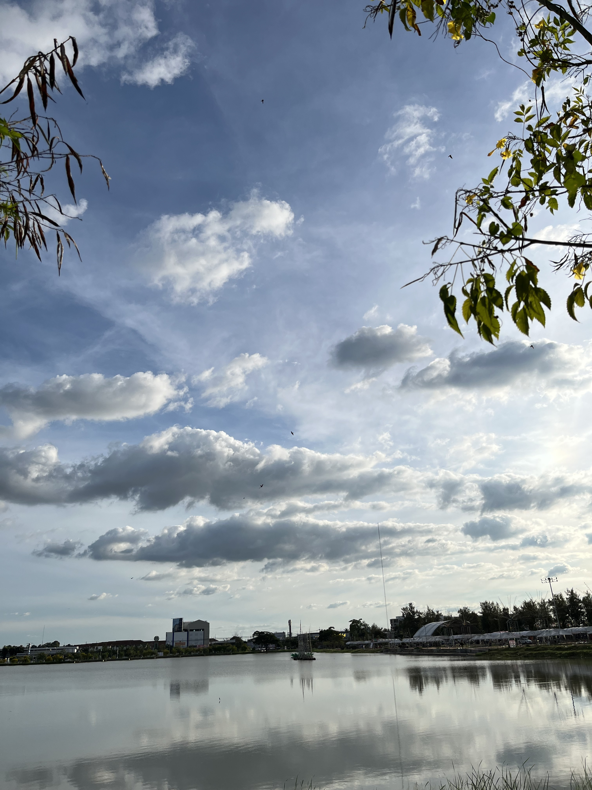
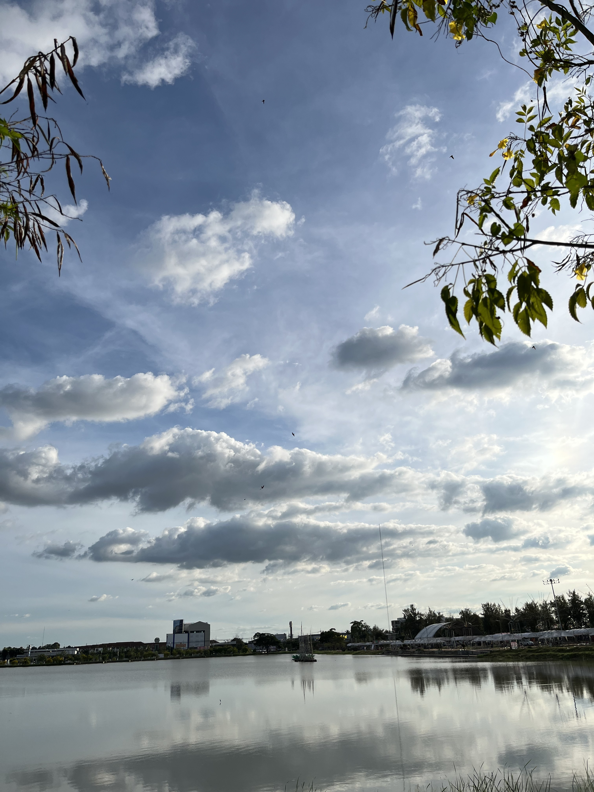

หอสมุดกลาง มหาวิทยาลัยขอนแก่น
หอสมุดกลางเป็นแหล่งเรียนรู้ที่มีหนังสือ และทรัพยากรการเรียนรู้หลากหลาย เหมาะสำหรับการหาข้อมูล ศึกษา และทำงานกลุ่ม บรรยากาศเงียบสงบ พร้อมบริการอินเทอร์เน็ตภายในอาคาร


เว็บไซต์นี้เป็นตัวอย่างแนะนำสถานที่สำคัญภายในมหาวิทยาลัยขอนแก่น (Khon Kaen University) เพื่อใช้เป็นแบบฝึกหัดในวิชาเว็บโปรแกรมมิ่ง โดยมีภาพประกอบและฟอร์มให้ผู้ชมส่งข้อมูลสถานที่ได้
หอสมุดกลางเป็นแหล่งเรียนรู้ที่มีหนังสือ และทรัพยากรการเรียนรู้หลากหลาย เหมาะสำหรับการหาข้อมูล ศึกษา และทำงานกลุ่ม บรรยากาศเงียบสงบ พร้อมบริการอินเทอร์เน็ตภายในอาคาร
โรงพยาบาลของมหาวิทยาลัยให้บริการรักษาพยาบาลทั้งผู้ป่วยในและผู้ป่วยนอก เป็นศูนย์การแพทย์ที่ทันสมัย พร้อมบุคลากรทางการแพทย์และอุปกรณ์ครอบคลุมหลายสาขา
สนามกีฬาและอาคารกิจกรรม ใช้จัดการแข่งขันกีฬาระดับมหาวิทยาลัยและกิจกรรมชุมชน มีพื้นที่กว้างและสิ่งอำนวยความสะดวกครบครัน เหมาะสำหรับการออกกำลังกายและชมกิจกรรมต่าง ๆ
พื้นที่สีเขียวและสวนพฤกษศาสตร์ของมหาวิทยาลัยเป็นที่พักผ่อน มีทางเดินและมุมถ่ายรูปสวย ๆ เหมาะสำหรับการพักผ่อนในช่วงกลางวันและการศึกษาเกี่ยวกับพรรณไม้
 

ไฟล์นี้ถูกออกแบบให้ใช้ HTML5 Semantic (header, main, section, article, footer) และใช้ CSS Box Model กับ Media Query เพื่อทำให้เว็บตอบสนองต่อหน้าจอขนาดต่าง ๆ